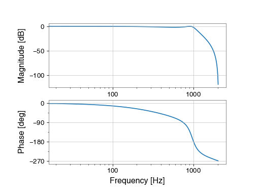

Signal processing¶
In a wide-array of applications, the original data recorded from a digital system must be manipulated in order to extract the greatest amount of information.
GWpy provides a suite of functions to simplify and extend the excellent digital signal processing suite in scipy.signal.
Spectral density estimation¶
Spectral density estimation
is a common way of investigating the frequency-domain content of a time-domain
signal.
GWpy provides wrappers of power spectral density (PSD) estimation methods
from scipy.signal to simplify calculating a
FrequencySeries from a TimeSeries.
The gwpy.signal.spectral sub-package provides the following
PSD estimation averaging methods:
'bartlett'- mean average of non-overlapping periodograms'median'- median average of overlapping periodograms'welch'- mean average of overlapping periodograms
Each of these can be specified by passing the function name as the
method keyword argument to any of the relevant TimeSeries
instance methods:
|
Calculate the PSD |
|
Calculate the ASD |
|
Calculate the average power spectrogram of this |
|
Calculate the non-averaged power |
e.g, TimeSeries.psd():
>>> ts = TimeSeries(...)
>>> psd = ts.psd(..., method='median', ...)
See scipy.signal.welch() for more detailed documentation on the PSD
estimation method used.
Time-domain filtering¶
The TimeSeries object comes with a number of instance methods that should make filtering data trivial for a number of common use cases.
Available methods include:
Filter this |
|
Filter this |
|
Filter this |
|
Filter this |
|
Whiten this |
|
Filter this |
Each of the above methods eventually calls out to TimeSeries.filter() to apply a digital linear filter, normally via cascaded second-order-sections (requires scipy >= 0.16).
For a worked example of how to filter LIGO data to discover a gravitational-wave signal, see the example Filtering a TimeSeries to detect gravitational waves.
Frequency-domain filtering¶
Additionally, the TimeSeries object includes a number of instance methods to generate frequency-domain information for some data.
Available methods include:
Calculate the PSD |
|
Calculate the ASD |
|
Calculate the average power spectrogram of this |
|
Scan a |
|
Calculate the Rayleigh |
|
Calculate the Rayleigh statistic spectrogram of this |
For a worked example of how to load data and calculate the Amplitude Spectral Density FrequencySeries, see the example Calculating and plotting a FrequencySeries.
Filter design¶
The gwpy.signal provides a number of filter design methods which, when combined with the BodePlot visualisation, can be used to create a number of common filters:
Design a low-pass filter for the given cutoff frequency |
|
Design a high-pass filter for the given cutoff frequency |
|
Design a band-pass filter for the given cutoff frequencies |
|
Design a ZPK notch filter for the given frequency and sampling rate |
|
Concatenate a list of zero-pole-gain (ZPK) filters |
Each of these will return filter coefficients that can be passed directly into zpk (default for analogue filters) or filter (default for digital filters).
For a worked example of how to filter LIGO data to discover a gravitational-wave signal, see the example Filtering a TimeSeries to detect gravitational waves.
Cross-channel correlations:
Calculate the frequency-coherence between this |
|
Calculate the coherence spectrogram between this |
For a worked example of how to compare channels like this, see the example Calculating the coherence between two channels.
Reference/API¶
- filter_design.bandpass(fhigh, sample_rate, fstop=None, gpass=2, gstop=30, type='iir', **kwargs)[source]¶
Design a band-pass filter for the given cutoff frequencies
- Parameters
flow :
floatlower corner frequency of pass band
fhigh :
floatupper corner frequency of pass band
sample_rate :
floatsampling rate of target data
fstop :
tupleoffloat, optional(low, high)edge-frequencies of stop bandgpass :
float, optional, default: 2the maximum loss in the passband (dB)
gstop :
float, optional, default: 30the minimum attenuation in the stopband (dB)
type :
str, optional, default:'iir'the filter type, either
'iir'or'fir'**kwargs
other keyword arguments are passed directly to
iirdesign()orfirwin()- Returns
filter
the formatted filter. the output format for an IIR filter depends on the input arguments, default is a tuple of
(zeros, poles, gain)
Notes
By default a digital filter is returned, meaning the zeros and poles are given in the Z-domain in units of radians/sample.
Examples
To create a band-pass filter for 100-1000 Hz for 4096 Hz-sampled data:
>>> from gwpy.signal.filter_design import bandpass >>> bp = bandpass(100, 1000, 4096)
To view the filter, you can use the
BodePlot:>>> from gwpy.plot import BodePlot >>> plot = BodePlot(bp, sample_rate=4096) >>> plot.show()
(png)

{kind=link}
- filter_design.lowpass(sample_rate, fstop=None, gpass=2, gstop=30, type='iir', **kwargs)[source]¶
Design a low-pass filter for the given cutoff frequency
- Parameters
frequency :
floatcorner frequency of low-pass filter (Hertz)
sample_rate :
floatsampling rate of target data (Hertz)
fstop :
float, optionaledge-frequency of stop-band (Hertz)
gpass :
float, optional, default: 2the maximum loss in the passband (dB)
gstop :
float, optional, default: 30the minimum attenuation in the stopband (dB)
type :
str, optional, default:'iir'the filter type, either
'iir'or'fir'**kwargs
other keyword arguments are passed directly to
iirdesign()orfirwin()- Returns
filter
the formatted filter. the output format for an IIR filter depends on the input arguments, default is a tuple of
(zeros, poles, gain)
Notes
By default a digital filter is returned, meaning the zeros and poles are given in the Z-domain in units of radians/sample.
Examples
To create a low-pass filter at 1000 Hz for 4096 Hz-sampled data:
>>> from gwpy.signal.filter_design import lowpass >>> lp = lowpass(1000, 4096)
To view the filter, you can use the
BodePlot:>>> from gwpy.plot import BodePlot >>> plot = BodePlot(lp, sample_rate=4096) >>> plot.show()
(png)

{kind=link}
- filter_design.highpass(sample_rate, fstop=None, gpass=2, gstop=30, type='iir', **kwargs)[source]¶
Design a high-pass filter for the given cutoff frequency
- Parameters
frequency :
floatcorner frequency of high-pass filter
sample_rate :
floatsampling rate of target data
fstop :
float, optionaledge-frequency of stop-band
gpass :
float, optional, default: 2the maximum loss in the passband (dB)
gstop :
float, optional, default: 30the minimum attenuation in the stopband (dB)
type :
str, optional, default:'iir'the filter type, either
'iir'or'fir'**kwargs
other keyword arguments are passed directly to
iirdesign()orfirwin()- Returns
filter
the formatted filter. the output format for an IIR filter depends on the input arguments, default is a tuple of
(zeros, poles, gain)
Notes
By default a digital filter is returned, meaning the zeros and poles are given in the Z-domain in units of radians/sample.
Examples
To create a high-pass filter at 100 Hz for 4096 Hz-sampled data:
>>> from gwpy.signal.filter_design import highpass >>> hp = highpass(100, 4096)
To view the filter, you can use the
BodePlot:>>> from gwpy.plot import BodePlot >>> plot = BodePlot(hp, sample_rate=4096) >>> plot.show()
(png)
{kind=link}
- filter_design.notch(sample_rate, type='iir', output='zpk', **kwargs)[source]¶
Design a ZPK notch filter for the given frequency and sampling rate
- Parameters
-
frequency (default in Hertz) at which to apply the notch
number of samples per second for
TimeSeriesto which this notch filter will be appliedtype :
str, optional, default: ‘iir’type of filter to apply, currently only ‘iir’ is supported
output :
str, optional, default: ‘zpk’output format for notch
**kwargs
other keyword arguments to pass to
scipy.signal.iirdesign - Returns
filter
the formatted filter; the output format for an IIR filter depends on the input arguments, default is a tuple of
(zeros, poles, gain)
See also
scipy.signal.iirdesignfor details on the IIR filter design method and the output formats
Notes
By default a digital filter is returned, meaning the zeros and poles are given in the Z-domain in units of radians/sample.
Examples
To create a low-pass filter at 1000 Hz for 4096 Hz-sampled data:
>>> from gwpy.signal.filter_design import notch >>> n = notch(100, 4096)
To view the filter, you can use the
BodePlot:>>> from gwpy.plot import BodePlot >>> plot = BodePlot(n, sample_rate=4096) >>> plot.show()
(png)
{kind=link}
- filter_design.concatenate_zpks()[source]¶
Concatenate a list of zero-pole-gain (ZPK) filters
- Parameters
*zpks
- Returns
zeros :
numpy.ndarraythe concatenated array of zeros
poles :
numpy.ndarraythe concatenated array of poles
gain :
floatthe overall gain
Examples
Create a lowpass and a highpass filter, and combine them:
>>> from gwpy.signal.filter_design import ( ... highpass, lowpass, concatenate_zpks) >>> hp = highpass(100, 4096) >>> lp = lowpass(1000, 4096) >>> zpk = concatenate_zpks(hp, lp)
Plot the filter:
>>> from gwpy.plot import BodePlot >>> plot = BodePlot(zpk, sample_rate=4096) >>> plot.show()
(png)

{kind=link}